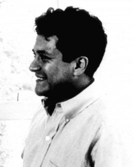
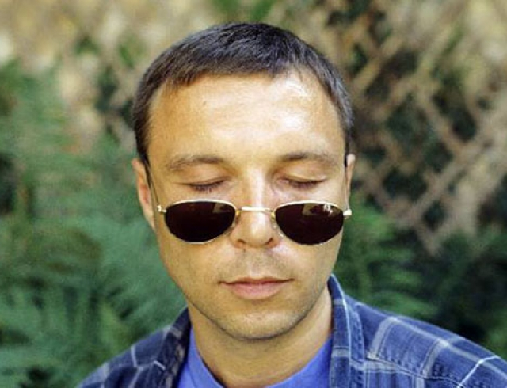

Карлос Кастанеда
Его работы - собрание личных дневников, которые он вёл во время своего затяжного путешествия в Мексику, будучи студентом биологии калифорнийского университета в 60-е годы прошлого столетия. Field trip привёл к тому, что Карлоса встретил индеец Дон Хуан: воин и маг, носитель древней шаманской традиции. Дон Хуан под видом помощи в исследовании приобщал Карлоса к своей философии, между делом потчевая его солидными порциями кактуса пейот. Кастанеда же, ошеломлённый напором старого индейца, мескалина и мексиканской жары, знал себе записывал всё в дневники, а потом издал в цикле из 11 книг.
Звучит как наркомания, эзотерика и мистификация? Безусловно, так и есть :) Несмотря на это, Книги Карлоса Кастанеды оказали на меня огромнейшее влияние в возрасте 19-20 лет, с них начался мой путь 7 лет назад. Почему? Разумеется, надо сделать скидку на впечатлительность возраста и то, что чтение наложилось на прекрасный период осознанной свободы (первый опыт оторванности от дома и жизни в другой стране). Но, даже учитывая это, Кастанеда оказался для меня первым серьезным проводником в мир сознания и подсознания, он научил меня тому, что мир воспринимается нами по разному в зависимости от состояния ума, и речь идёт не о наркотическом влиянии, а о сознательном управлении своим восприятием. Что же это значит?
Можно провести аналогию с радиоприёмником: в зависимости от настройки, он принимает волны разной длины и частоты. Точно так же и мы, впитываем энергию мира через наши приёмники - сознания - работающие своего рода фильтрами. Дон Хуан, как духовный лидер и наставник Карлоса, учит шаманскому способу управления этим самым фильтром. Плюсом, его книги безжалостно препарируют чувство собственной важности, показывают ничтожность потакания своим слабостям, учат остановке внутреннего диалога. В целом, можно сказать, что "Путь Воина" (так называется учение Дона Хуана) есть ко всему прочему комплекс рекомендаций и методик для обретения внутренней свободы, личностного становления, достижения высших уровней осознания реальности. Книги Кастанеды захватывают своей откровенностью и силой, а удивительные описания магии древних индейцев и их духов служат неповторимым экскурсом в их культуру и самобытность.
Часто рекомендуется начинать чтение Карлоса Кастанеды с третьей его книги, "Путешествие в Икстлан"; первые две и правда слишком смахивают на сумбурный дневник ошалевшего от наркотиков студента :D Впрочем, я получил удовольствие и массу пищи для ума и от них.
Учение дона Хуана: Путь знания индейцев яки (1968)
На любой путь нужно смотреть прямо и без колебаний. Все пути одинаковы: они ведут в никуда. Есть ли у этого пути сердце? Если есть, то это хороший путь; если нет, то от него никакого толку. Один путь делает путешествие по нему радостным: сколько ни странствуешь — ты и твой путь нераздельны. Другой путь заставит тебя проклинать свою жизнь. Один путь даёт тебе силы, другой — уничтожает тебя.
Вещи, которые делают люди, ни при каких условиях не могут быть более важными, чем мир. И, таким образом, воин относится к миру как к бесконечной тайне, а к тому, что делают люди, — как к бесконечной глупости.
Отдельная реальность (1971)
Нужно искать и видеть чудеса, которых полно вокруг тебя. Ты умрешь от усталости, не интересуясь ничем, кроме себя самого; от этой-то усталости ты глух и слеп ко всему остальному.
Путешествие в Икстлан (1972)
Весь фокус в том, на что ориентироваться… Каждый из нас сам делает себя либо несчастным, либо сильным. Объём работы, необходимой и в первом, и во втором случае, — один и тот же.
Виктор Пелевин
Буду короток - это мой любимый из ныне живущих русских писателей! Только его безупречная несерьёзность достаточно несерьёзна, чтобы вызывать моё искреннее и глубочайшее уважение. Пелевин - Кастанеда русской закваски, носитель потрясающего абстрактного юмора, самоиронии и мастер выдумывания умовертительных сюжетов. Его взгляд на вещи базируется на этакой помеси "Пути Воина", индуизме, буддизме, даосизме, алхимии и психоделиках. Стиль письма - местами откровенно веселый и шкодный, местами тоскливо мрачный и по-русски безнадёжный. Сюжеты, обычно, разворачиваются в нашей большой и любимой стране. Не знаю, как его классифицирует общественность, да и мало меня это заботит, но я с уверенностью отношу Виктора Олеговича в ранг прошаренных людей современности.
Для знакомства рекомендую "Чапаев и Пустота" - по ней ты сразу поёмешь, нравится тебе, или нет. Если зацепит, продолжить можно короткой интерпретацией мифа о Минотавре под названием "Шлем Ужаса". В случае дальнейшего интереса, - "Generation П", "Empire V".
Изданию «Известия» (2006)
Люди даже смутно не понимают сил, которые управляют их жизнью. Они не понимают смысла своей эволюции. То, что называют «прогрессом», опустило человека гораздо ниже живущего на свободе животного. Образ жизни зверя — есть экологически чистую пищу, жить в самых подходящих для организма климатических условиях, много двигаться и никогда ни о чем не волноваться — сегодня доступен только ушедшему на покой миллионеру. А обычный человек всю жизнь работает, высунув язык от усталости, а потом умирает от стресса, успев только кое-как расплатиться за норку в бетонном муравейнике. Единственное, что он может, — это запустить в то же колесо своих детей.
Изданию «Сноб» (2010)
корр.: Скажите, как сделать так, чтобы нас всех отпустило?
— Просто наше эго постоянно стремится выжать из мозга ещё одну капельку допамина, манипулируя засаленной колодой привычных состояний ума, и не даёт нам перенести внимание на что-нибудь новое, хотя теоретически мы знаем, что давно пора это сделать. Это такое смешное ежедневное недоразумение, из которого со временем складывается трагедия жизненного промаха. Теперь о техническом аспекте. Сделать так, чтобы жопа нас отпустила, нельзя, потому что она даже не знает, что мы в ней. И объяснить ей это очень сложно — здесь не поможет даже молитва. Зато вполне реально понемногу отпустить её самому. Для этого, если коротко, нужно вести трезвый образ жизни и внимательно наблюдать за тем, что происходит в нашем сознании.
Чапаев и Пустота (1996)
Весь этот мир — это анекдот, который Господь Бог рассказал самому себе.
— Что меня всегда поражало, — сказал он, — так это звездное небо под ногами и Иммануил Кант внутри нас.
На самом деле слова "прийти в себя" означают "прийти к другим", потому что именно эти другие с рождения объясняют тебе, какие усилия ты должен проделать над собой, чтобы принять угодную им форму.
Шлем Ужаса (2005)
[UGLI 666] ...Господь не заставляет нас себе молиться. Мы сами выбираем свой путь, поскольку он сотворил нас со свободной волей.
[Nutscracker] Не смеши меня, Угли. Свобода воли. Жизнь – это как падение с крыши. Можешь остановиться? Нет. Можешь вернуться назад? Нет. Можешь полететь в сторону? Только в рекламе трусов для прыжка с крыши. Свобода воли заключается в том, что ты можешь выбирать – пернуть в полете или дотерпеть до земли. Вот по этому поводу все философы и спорят.